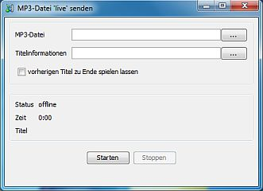

Wenn Deine Station für das Live-Senden freigeschaltet ist kannst Du über Station Admin vorproduzierte Sendungen oder Mixe die im MP3-Format vorliegen 'live' senden. Das kann entweder manuell gestartet werden oder als Aufgabe eingerichtet werden und zu einem vorgegebenen Zeitpunkt gestartet werden.
Übertragung manuell starten

Um eine Übertragung manuell zu starten klicke im -Menü auf .
Folgende Informationen müssen oder können angegeben werden:
Titelinformationen können in einer Textdatei bereitgestellt werden die eine Zeile pro Titel enthält. Jeder Eintrag sollte im Format Startzeit Artist - Titel angegeben werden.
Ein Beispiel:
0:00 Secret Garden - Lament For A Frozen Flower 5:02 Oystein Sevag & Lakki Patey - Painful Love 8:37 James Newton Howard - I'm Listening
Für Dateien die länger als 20 Minuten gehen sollte währden der Übertragund der Werbetrigger ausgelöst werden. Das geschieht in dem ein Titel "START_AD_BREAK - START_AD_BREAK" eingetragen wird. Es empfiehlt sich diesen nur für eine Sekunde einzufügen - also den nächsten regulären Titel ganz normal eine Sekunde später einzutragen.
Alternativ können die Werbetrigger auch automatisch eingefügt werden. Aktiviere dazu die Checkbox und gebe zwei Positionen an die mindestens 20, aber höchstens 40 Minuten auseinander liegen. Ist Deine Datei länger als eine Stunde wiederholen sich die Werbetrigger, also z. B. nach 0:20, 0:50, 1:20, 1:50 etc
Klicke auf um die Übertragung zu beginnen. Eine laufende Übertragung kann jederzeit durch klicken auf abgebrochen werden. Während eine Übertragung läuft werden im mittleren Bereich einige Informationen angezeigt:
Übertragung automatisch starten
Um eine Übertragung zu einem vorgegeben Zeitpunkt zu starten lege eine Aufgabe an - das ist hier genauer beschrieben. Die Konfigurationsmöglichkeiten entsprechen denen beim manuellen Start der Übertragung.